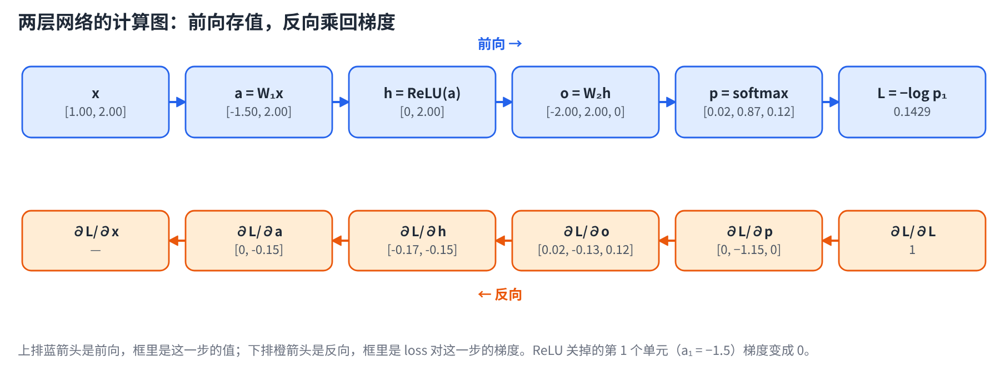
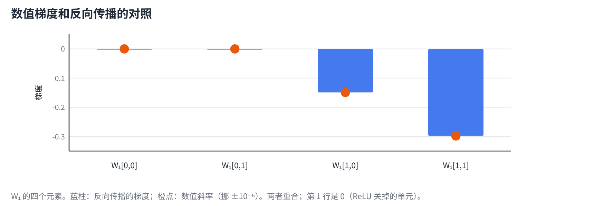

第 2 章 · 梯度与反向传播：“往猜得更对的方向挪”到底怎么算
本地运行
git clone https://github.com/wikieden/beyond-transformer
cd beyond-transformer/code/notebooks
pip install jupyterlab torch numpy
jupyter lab ch02_backprop.ipynb也可以下载后直接用 VS Code 打开 .ipynb 运行。需要 GPU 的章节在 Colab 里选「代码执行程序 → 更改运行时类型 → GPU」。
本章回答：第 1 章有了 loss，训练就是“把每个参数往让 loss 变小的方向挪一点”。可一个模型有上亿个参数，每个参数该往哪边挪、挪多少？导数、梯度、链式法则是什么？反向传播为什么能一次算出所有参数的梯度？softmax 加交叉熵的梯度为什么就是 p − y？怎么检查自己算的梯度对不对？
讲解日期：2026-11-25 · 上一章：第 1 章 交叉熵 loss · 下一章：第 3 章 优化器
对应原文：CS336 a1 handoutcs336-spring2025/materials/text/cs336_spring2025_assignment1_basics.txt§4 开头 L1362–L1368（训练三件套：loss、梯度、优化器）、§4.2 SGD 更新式 L1418–L1428；PyTorch 的自动求导见《PyTorch 从里到外》第 4 章 Autograd
本章缩写：∂（读作“偏”，partial：只让一个变量动、其余不动时的导数）；∇ = nabla（读作“纳布拉”：把所有偏导数排成一个向量，叫梯度 gradient）；ReLU = Rectified Linear Unit（整流 / 线性 / 单元：max(0, x)）；one-hot（独热：只有一格是 1、其余是 0 的向量）；SGD = Stochastic Gradient Descent（随机 / 梯度 / 下降）；h = 一个很小的步长（数值求导用）。全部缩写见 附录 · 缩写与术语表
讲解
第一步：导数 = 斜率：这个参数动一点，loss 变多少（2026-11-25）
类比：下山找最陡的方向。 你站在山坡上，蒙着眼睛。往东迈一小步，觉得脚下低了一点；往西迈一小步，脚下高了一点。那就往东走。“迈一小步，高度变多少”就是斜率，也就是导数。
一个变量的函数 f(x)，在 x 处的导数是
| 符号 | 读法 | 意思 |
|---|---|---|
| f′(x) | f 撇 x | x 处的斜率：x 增加一点点，f 增加多少倍 |
| h | h | 一小步，比如 0.0001 |
| 右边那个分式 | 中心差分 | 往两边各走一小步，看高度差（比只走一边更准） |
数字演示：f(x) = x²。
| x | 数值斜率（h = 0.0001） | 公式 2x |
|---|---|---|
| 1 | 2.0000 | 2 |
| 2 | 4.0000 | 4 |
模型有很多参数 \(\theta_1, \theta_2, \dots\)，对每一个都可以问“只动它、别的不动，loss 变多少”，这叫偏导数 \(\partial L/\partial\theta_i\)。把所有偏导数排成一个向量就是梯度 \(\nabla_\theta L\)：它指向 loss 增长最快的方向。所以下山要往反方向走（a1 §4.2 式 19，L1418–L1426）：
α 是学习率（一步迈多大，第 3、4 章细讲）。这就是最朴素的 SGD。
一句话：导数是斜率，梯度是所有偏导数排成的向量，指向 loss 涨得最快的方向；参数往梯度的反方向挪一小步。
第二步：链式法则：一层套一层，斜率相乘（2026-11-25）
类比：齿轮组。 第一个齿轮转 1 圈带动第二个转 3 圈，第二个转 1 圈带动第三个转 8 圈，那第一个转 1 圈，第三个就转 3 × 8 = 24 圈。每一层的“放大倍数”乘起来，就是总的放大倍数。
y 依赖 u，u 依赖 x，则
数字演示：y = (3x + 1)²，在 x = 1。
| 层 | 函数 | 这一层的斜率 | x = 1 时 |
|---|---|---|---|
| 内层 | u = 3x + 1 | du/dx = 3 | u = 4 |
| 外层 | y = u² | dy/du = 2u | 8 |
| 合起来 | 8 × 3 | 24 |
数值斜率也是 24.0000。神经网络就是很多层函数套在一起，链式法则让我们一层一层地把斜率乘回去。
一句话：函数套函数，导数就是每一层的导数连乘。
第三步：两层小网络：前向记下中间结果，反向一层层乘回去（2026-11-25）
类比：工厂流水线出了次品，倒着查责任。 前向是原料一站站加工成成品；反向是从“成品差多少”出发，一站站往回问“你这一站让误差变大了多少”，每一站只需要知道自己的输入和下一站传回来的“责任”。
网络（3 类分类）：
前向的数字（x = [1, 2]，W₁ = [[0.5, −1], [1, 0.5]]，W₂ = [[1, −1], [0.5, 1], [−1, 0]]，正确类 y = 1）：
| 量 | 值 |
|---|---|
| a = W₁x | [−1.5, 2.0] |
| h = ReLU(a) | [0, 2.0] |
| o = W₂h | [−2.0, 2.0, 0.0] |
| p = softmax(o) | [0.0159, 0.8668, 0.1173] |
| L = −log p₁ | 0.1429 |
反向：从 L 出发往回，每一步都是“下游传来的梯度 × 这一层的局部斜率”（矩阵版的链式法则）：
| 量 | 公式 | 值 |
|---|---|---|
| ∂L/∂o | p − onehot(y)（第四步推） | [0.0159, −0.1332, 0.1173] |
| ∂L/∂W₂ | (∂L/∂o) hᵀ | 第 1 列全 0，第 2 列 [0.0318, −0.2664, 0.2346] |
| ∂L/∂h | W₂ᵀ (∂L/∂o) | [−0.168, −0.1491] |
| ∂L/∂a | ∂L/∂h ⊙ [a > 0] | [0, −0.1491] |
| ∂L/∂W₁ | (∂L/∂a) xᵀ | [[0, 0], [−0.1491, −0.2981]] |
两点值得注意：
- ReLU 关掉的单元没有梯度：a₁ = −1.5 < 0，h₁ = 0，它那一行 W₁ 的梯度全是 0。如果一个单元对所有输入都 < 0，它永远学不动（“死 ReLU”）。
- 为什么一次就能算出全部梯度：反向时每个中间量的梯度只算一次，再传给它上游的所有参数共用。参数有 N 个，反向的计算量和前向同一个量级，而不是 N 倍（第 8 章会算出“反向 ≈ 前向的 2 倍”）。代价是前向时要把 a、h、p 这些中间结果都存下来。

图 2-1 · 计算图。上一排蓝色箭头是前向，每个框里是这一步的值；下一排橙色箭头是反向，每个框里是 loss 对这一步的梯度。ReLU 那一站，被关掉的第 1 个单元梯度变成 0一句话：前向时把每一层的中间结果存下来；反向时从 loss 出发，每层用“下游传回来的梯度 × 本层的局部斜率”，一层层乘回去，一次就得到所有参数的梯度。
第四步：softmax + 交叉熵的梯度就是 p − y（2026-11-25）
第 1 章说 \(L = -o_y + \log\sum_a e^{o_a}\)。对第 k 个 logit 求偏导：
\([k = y]\) 是“k 是不是正确类”，是就取 1、否则取 0，也就是 one-hot 向量 y 的第 k 格。所以梯度向量是 p − y：
| 类 | p | y（one-hot） | p − y | 意思 |
|---|---|---|---|---|
| 0 | 0.0159 | 0 | +0.0159 | 这个错误类的分数要降一点 |
| 1 | 0.8668 | 1 | −0.1332 | 正确类的分数要升 |
| 2 | 0.1173 | 0 | +0.1173 | 这个错误类要降得多一些 |
三个数加起来一定是 0（p 和 y 都加起来等于 1）。正确类的概率越接近 1，这个梯度越接近 0，模型就学得越慢：已经猜对的样本几乎不再推动参数。
一句话：softmax 接交叉熵，对 logits 的梯度就是 p − y：错误类往下压、正确类往上抬，猜得越准梯度越小。
第五步：梯度检查与自动求导（2026-11-25）
自己推的反向公式容易错一个转置或一个符号。检查办法：用第一步的数值斜率，把每个参数各挪 ±ε，看 loss 的变化和反向传播给出的梯度是否一致。
数字演示（ε = 1e-5）：数值梯度 ∂L/∂W₁ = [[0, 0], [−0.1491, −0.2981]]，和第三步一致，最大相对误差 4.6 × 10⁻¹¹。
数值求导每个参数要算两次前向，上亿参数根本算不起，所以只用来检查小例子；真正训练时用自动求导：框架在前向时记下每一步运算（计算图），backward() 时按第三步的规则自动倒着乘回去。
场景代码：PyTorch 的自动求导和梯度检查（真实库调用；本书环境没装 torch，没跑过）：
x = torch.tensor([1.0, 2.0], dtype=torch.float64)
W1 = torch.tensor([[0.5, -1.0], [1.0, 0.5]], dtype=torch.float64, requires_grad=True)
W2 = torch.tensor([[1.0, -1.0], [0.5, 1.0], [-1.0, 0.0]], dtype=torch.float64, requires_grad=True)
loss = F.cross_entropy((W2 @ torch.relu(W1 @ x))[None], torch.tensor([1]))
loss.backward() # W1.grad、W2.grad 就是第三步那两张表
torch.autograd.gradcheck(lambda w: F.cross_entropy((W2 @ torch.relu(w @ x))[None], torch.tensor([1])), (W1,))
计算图记账、zero_grad、原地修改为什么报错这些细节，见《PyTorch 从里到外》第 4 章。

图 2-2 · W₁ 四个元素的梯度：蓝柱是反向传播的结果，橙点是数值斜率（每个参数挪 ±10⁻⁵），两者重合；第 1 行两个都是 0（ReLU 关掉的单元）一句话：梯度检查用数值斜率核对反向公式，只适合小例子；实际训练靠自动求导按计算图倒着乘。
动画演示：前向算 loss，反向一层层传梯度

可交互版：animations/02-backprop.html（▶ 播放 / → 单步；滑块调输入 x₁（a₁ = 0.5x₁ − 2，x₁ 过 4 才变正），看哪些单元被 ReLU 关掉、梯度在哪里断掉）。
怎么看：
- 前向：x → a → h → o → p → L，每个框依次亮起并写出数值（第三步）；
- 反向：从 L 往回，每个框下面写出梯度，ReLU 处被关掉的单元梯度变成 0；
- 拖动 x₁：a₁ 由负变正时，第 1 个单元重新“通电”，它那一行 W₁ 的梯度不再是 0。
练习与作答记录
题 1（第一步）：f(x) = x³，用中心差分（h = 0.001）估计 x = 2 处的斜率，和公式 3x² 比一比。
题 2（第二步）：y = (2x − 1)³，在 x = 1 处的导数是多少？写出内层、外层各自的斜率。
题 3（第三、四步）：如果把例子里的正确类改成 y = 2，∂L/∂o 是多少？∂L/∂W₁ 的第 1 行还是 0 吗，为什么？
题 4（第五步）：一个模型有 1 亿个参数，用数值求导检查全部梯度，要做多少次前向？为什么实际训练不这么做？
口诀
迈一小步看高低，斜率就是导数；所有偏导排成向量，就是梯度。
逆着梯度挪一步，乘上学习率。
函数套函数，斜率连着乘。
前向存中间，反向乘回去：下游梯度乘本层斜率，一次算完所有参数。
softmax 接交叉熵，梯度就是 p 减 y。
数值斜率查小例，真训练靠自动求导。
本章复习卡片
必背：B20–B21（B20 链式法则与反向传播；B21 softmax + 交叉熵的梯度 p − y 与梯度检查）。练习做完后，按答错、卡住的地方再补。
附录 · 延伸阅读
留给以后深入学习用，不影响本章主线。★ 是建议先读的。
推荐阅读
| 读什么 | 读哪里 | 读它为了什么 |
|---|---|---|
| ★ CS336 a1 handout | §4 开头 L1362–L1368；§4.2 式 19 L1418–L1426 | 训练三件套和 SGD 更新式 |
| ★ 《PyTorch 从里到外》第 4 章 Autograd | 全部 | 计算图怎么记账、backward() 怎么倒着算 |
| 《数学与实验统计》第 13 章 微积分与自动微分 | 雅可比、前向 / 反向模式 | 矩阵版链式法则、为什么训练用反向模式 |
| Karpathy micrograd（在线视频） | 全部 | 用几十行代码从零写一个自动求导 |
| 前作 第 22 章 嵌入与 softmax | softmax 一节 | 输出层的 softmax |
数学原理
- 矩阵版链式法则：y = Wx 时，∂L/∂W = (∂L/∂y) xᵀ，∂L/∂x = Wᵀ(∂L/∂y)。
- 逐元素函数：h = g(a) 时，∂L/∂a = ∂L/∂h ⊙ g′(a)；ReLU 的 g′ 是 [a > 0]。
- softmax + 交叉熵：∂L/∂o = p − y，分量和为 0。
- 反向模式的代价：一次反向得到全部 N 个参数的梯度，计算量约为前向的 2 倍；代价是要存前向的中间结果。
公式清单
| 公式 | 意思 |
|---|---|
| \(f'(x) \approx \frac{f(x+h) - f(x-h)}{2h}\) | 中心差分 |
| \(\theta \leftarrow \theta - \alpha\nabla_\theta L\) | SGD 一步 |
| \(\frac{dy}{dx} = \frac{dy}{du}\frac{du}{dx}\) | 链式法则 |
| \(\partial L/\partial W = (\partial L/\partial y)\,x^\top\) | 线性层的权重梯度 |
| \(\partial L/\partial o = p - y\) | softmax + 交叉熵的梯度 |
代码对照：把本章的数字用代码算一遍
NumPy（Numerical Python：数值 / Python）。代码在仓库本地
beyond-transformer/solutions/chapter-code/ch02_backprop.py，配套测试tests/test_ch02.py，notebook 在notebooks/ch02_backprop.ipynb：
bash cd beyond-transformer/solutions/chapter-code uv run python ch02_backprop.py uv run pytest tests/test_ch02.py
讲义 ↔ 代码：
| 讲义 | 公式 | 写法 | 跑出来 |
|---|---|---|---|
| 第一步 斜率 | 中心差分 | slope(f, x) |
2.0000、4.0000 |
| 第二步 链式法则 | 斜率连乘 | chain_example(1.0) |
24 |
| 第三步 前向 | a、h、o、p、L | forward() |
L = 0.1429 |
| 第三、四步 反向 | p − y、外积 | backward() |
∂L/∂W₁ 第 2 行 [−0.1491, −0.2981] |
| 第五步 梯度检查 | 挪 ±ε | grad_check() |
相对误差 4.6e-11 |
关键几行：
do = c["p"].copy(); do[y] -= 1 # ∂L/∂o = p − onehot(y)
dw2 = np.outer(do, c["h"]) # ∂L/∂W2 = do · hᵀ
da = (w2.T @ do) * (c["a"] > 0) # 传回 h，再过 ReLU 的开关
dw1 = np.outer(da, x) # ∂L/∂W1 = da · xᵀ
代码里才看得到的 2 件事：
- 反向要用前向存下的 a、h、p：
backward()先调一次forward()拿中间结果。这就是训练比推理吃显存的原因。 - 梯度检查用相对误差：梯度本身很小时，绝对误差看不出问题；分母加 1e-8 防止两边都是 0 时除零。
自己改一改（不影响练习答案）：
- 把 x 改成 [3, 1]，哪些单元被 ReLU 关掉？∂L/∂W₁ 哪一行变成 0？
- 把
grad_check的 eps 改成 1e-2 和 1e-9，相对误差怎么变？为什么太大、太小都不好？